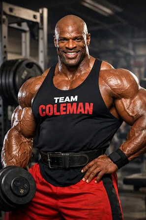
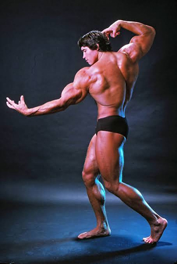
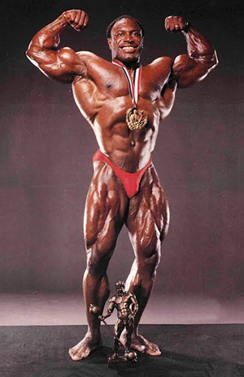

Ronald Dean Coleman (Monroe, Luisiana; 13 de mayo de 1964), más conocido como Ronnie Coleman o "The King", es un exfisicoculturista profesional y exagente de policía estadounidense. Ganó ocho veces consecutivas el título de Mister Olympia.

Schwarzenegger comenzó a entrenar con pesas cuando tenía quince años, ganó el título de Mr. Universo con veinte y luego encadenó siete victorias en la competición de Mister Olympia entre 1970 y 1980.

Lee Haney[1] (Spartanburg,[2] Carolina del Sur; 11 de noviembre de 1959)[3] es un exculturista estadounidense conocido por haber ostentado el título de Mr. Olympia 8 ocasiones distintas, desde 1984 a 1991,[4] igualado 14 años después por Ronnie Coleman, quien ostentó el título entre 1998 y 2005.